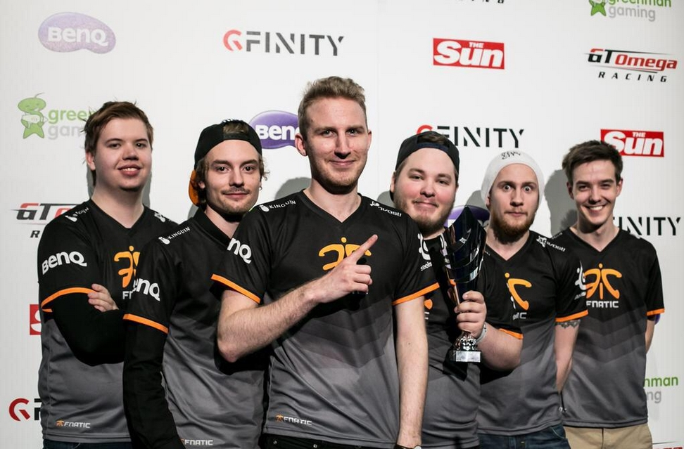

E-sport
Fnatic
Fnatic- europejska drużyna e-sportowa z siedzibą w Londynie. Organizacja została założona 23 lipca 2004 roku przez Samuela i Anne Mathews. W 2006 i 2009 Fnatic wygrało eSports Award w kategorii najlepszy zespół roku. Jest jedną z najbardziej utytułowanych drużyn europejskich w League of Legends i jest jedyną europejską drużyną, która wygrała Mistrzostwa Świata w League of Legends.
Fnatic jest jednym z członków-założycieli G7 Teams.
